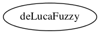

Master index
Index for Development/DE_LUCA_FUZZY
Dependency Graph for Development/DE_LUCA_FUZZY

Generated on Tue 23-Feb-2016 16:55:33 by
m2html
© 2005
 Master index
Master index Master index
Master index